اعمل كلمة سر (6 أرقام على الأقل). دي اللي بتقفل البيانات، فاكتبها في حتة أمان.
البرنامج هيسألك عن اسمك مرة واحدة. الاسم ده بيتكتب على أي حركة تسجلها، علشان تعرفوا مين سجّل إيه.
من الإعدادات ← النسخة على Google Sheet اربط البرنامج بالشيت. كده كل حاجة بتتحفظ على جوجل أول بأول.
علشان تشغّله على جهاز تاني: من نفس المكان دوس "ابعت رابط الربط لجهاز تاني"، وافتح الرابط على الجهاز التاني. الجهازين هيشوفوا نفس الحسابات.
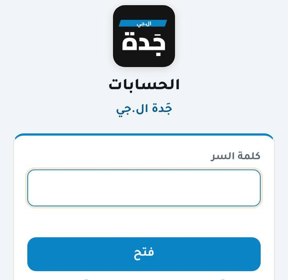
كل مرة تفتح البرنامج بتكتب كلمة السر، أو تفتح بالبصمة لو مشغّلها
💡 ثبّت البرنامج على الموبايل: لو فاتحه من المتصفح هتلاقي زرار "ثبّت البرنامج على الموبايل" في أول الصفحة وفي الإعدادات. على أندرويد بدوسة واحدة، وعلى الآيفون بيشرحلك الخطوات من Safari. أول ما يتثبت الزرار بيختفي.
2الشاشة الرئيسية (العملاء)
فوق: ليا عند الناس وعليا للناس والصافي.
كارت "صباح الخير" بيظهر أول ما تفتح كل يوم: العملا اللي اتأخروا في الدفع (وتقدر تبعتلهم رسالة واتساب برصيدهم)، والشيكات والطلبات اللي ميعادها قرّب. لما تخلص دوس "تمام".
تحت: قايمة العملا ورصيد كل واحد. دوّر بالاسم أو التليفون من خانة البحث.
اسحب الشاشة لتحت وانت في أول الصفحة علشان تعمل مزامنة مع الشيت. ولو انت تحت في الصفحة، دوس على نفس التبويب اللي تحت يطلّعك لفوق.
زرار الرجوع في الموبايل بيقفل النافذة المفتوحة أو يرجّعك للصفحة اللي قبلها. وفي أول صفحة لازم تدوسه مرتين علشان تخرج.
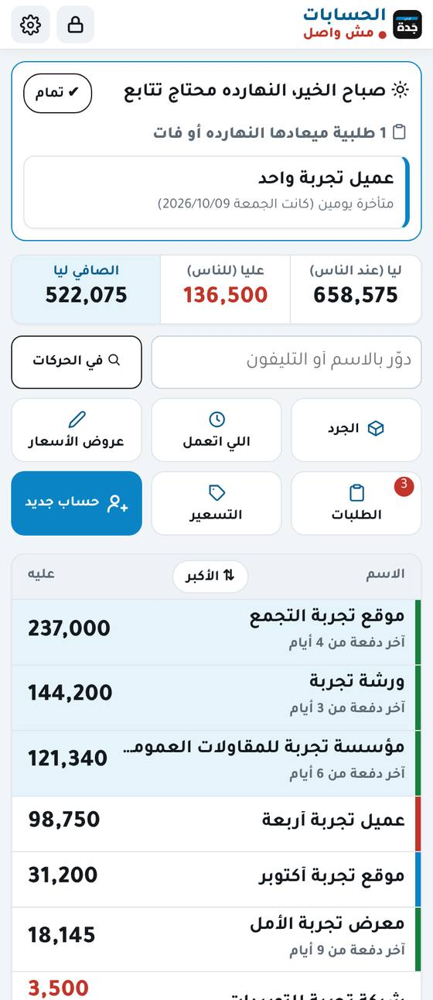
العميل اللي رصيده عدّى الحد الأصفر أو الأحمر بيبان عليه علامة باللون (الحدود بتتظبط من الإعدادات المتقدمة)
3حساب جديد (عميل أو مورد)
من الرئيسية دوس "حساب جديد".
اختار القسم (عملاء ولا موردين)، واكتب الاسم والتليفون.
لو ليه رصيد قديم من قبل البرنامج، اكتبه في رصيد أول المدة واختار عليه أو ليه، وبعدين دوس "إضافة الحساب".
4فاتورة بيع
افتح حساب العميل ودوس "فاتورة بيع".
اكتب اسم الصنف (البرنامج بيقترح الأصناف اللي كتبتها قبل كده)، واختار الوحدة (كيلو، لفة، قطعة…)، واكتب الكمية والسعر.
الإجمالي بيتحسب لوحده. لو فيه خصم أو ملاحظة دوس "+ ملاحظة أو خصم".
دوس "حفظ الفاتورة". الرصيد بيتحدث على طول.
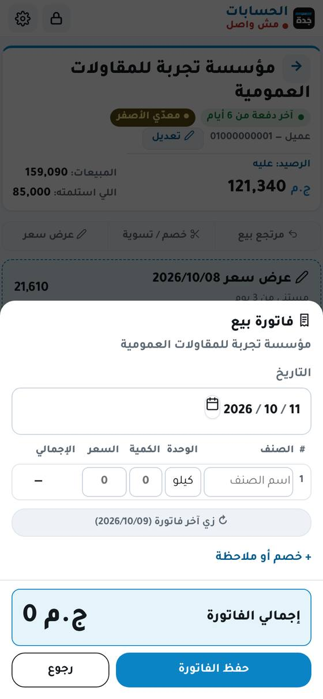
💡 زرار "زي آخر فاتورة" بيملالك نفس أصناف آخر فاتورة للعميل ده، وتغيّر الكميات بس.
5استلام دفعة
من حساب العميل دوس "استلمت دفعة".
اكتب المبلغ، أو دوس "كل الرصيد" لو دفع كل اللي عليه.
اختار فلوس أو شيك. الفلوس بتدخل الخزنة على طول، والشيك مبيدخلش الخزنة غير لما يتصرف.
دوس "حفظ الدفعة".
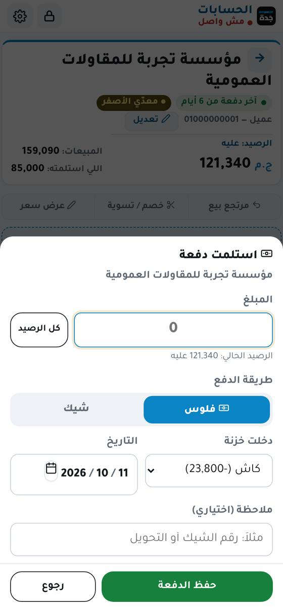
6صفحة الحساب وكشف الحساب
فوق: الرصيد، وإجمالي المبيعات، واللي استلمته منه.
تحت: كشف الحساب بكل الحركات بالترتيب زي الإكسيل، وكل صنف في سطر لوحده.
زرار "كشف حساب" بيعمل ورقة PDF باسم الشركة، تبعتها للعميل على الواتساب أو تطبعها.
وكمان فيه: مرتجع بيع، وخصم / تسوية، وعرض سعر.
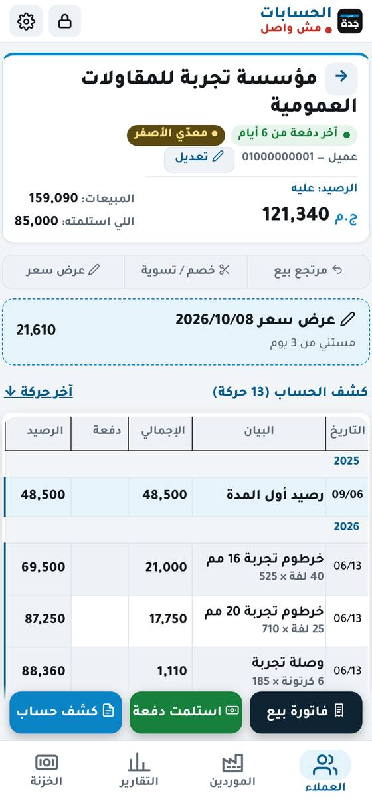
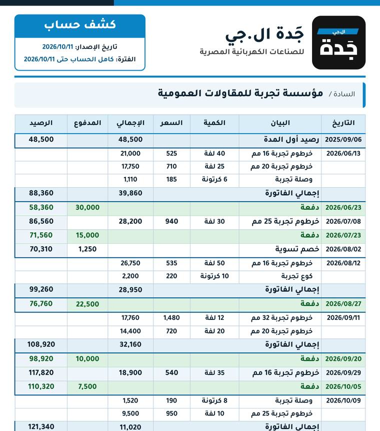
شكل كشف الحساب الـ PDF
7تعديل أو إلغاء حركة
دوس على الحركة في كشف الحساب، هتفتحلك زي ما سجلتها.
غيّر اللي عاوزه ودوس "حفظ التعديل". النسخة القديمة بتتحفظ، وتقدر تشوفها في أي وقت.
لو عاوز تلغيها، دوس "إلغاء الحركة دي". هيطلعلك زرار "↩ تراجع" لمدة 4 ثواني لو غلطت.
💡 مفيش حاجة بتتمسح نهائي. أي حركة ملغية تلاقيها في صفحة "اللي اتعمل" وتدوس "رجّع الحركة دي".
8الموردين
نفس فكرة العملا بالظبط، بس بالعكس: بتسجل فاتورة شراء لما تشتري منه، ودفعة لما تدفعله. الرقم اللي فوق هو "ليهم عندي".
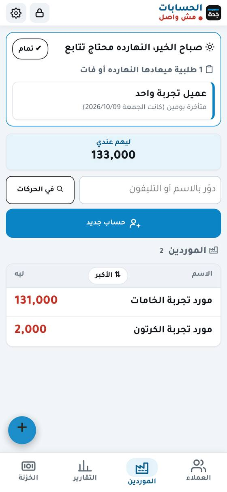
حد حوّل للمورد بدالك (فودافون كاش مثلاً): الشخص ده بيبقى ليه حساب عادي في الموردين. افتح حساب المورد اللي اتحوّله ← دفعت له ← اكتب المبلغ ← اختار "📲 حد حوّلها" ← اختار اسم الشخص ← حفظ. المورد بينزل بالمبلغ بس، والشخص بيزيد اللي ليه بالمبلغ + عمولة 10 جنيه على كل ألف لوحدها، والخزنة متتحركش. كشف حساب المورد اللي بتبعته بيبان فيه "دفعة" عادية، وفوق في صفحة الشخص إجمالي اللي حوّله وإجمالي العمولة. ولما تدّيله فلوسه افتح حسابه ← دفعت له عادي من الخزنة.
9الخزنة والمصروفات
الكارت الأسود فوق: الفلوس اللي معاك دلوقتي في الدرج.
الزراير اللي تحت: تحصيل (فلوس دخلت من عميل)، سداد (فلوس دفعتها لمورد)، مصروف (كهربا، خامات، صبغة…)، إيراد (أي فلوس دخلت من بره البيع).
تقدر تشوف النهارده أو الأسبوع أو الشهر أو من تاريخ لتاريخ، وبالنوع (كل بند لوحده) أو بالتاريخ.
اللي يسجّل حركة من تليفونه هو اللي دفع أو استلم، من غير ما تختار حاجة. اسمه بيتكتب تحت الحركة بخط صغير، وكل واحد بلون.
في بالنوع كارت "مين استلم ومين دفع": كل واحد استلم كام ودفع كام، والدوس على الاسم بيفتح حركاته بس.
في المصروف اكتب المصروف في الملاحظة (زي "بنزين"): لو كتبته قبل كده على نفس البند مرتين أو أكتر، البند بيتختار لوحده. ولو مش مظبوط غيّره بإيدك.
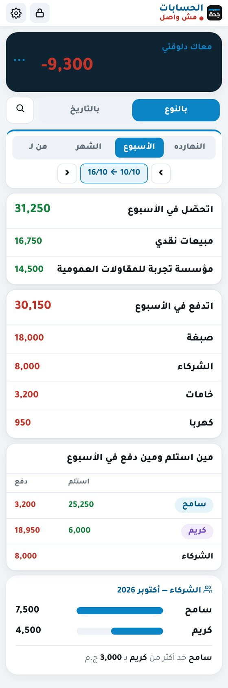
زرار ⋯ في الكارت الأسود فيه:
عدّ الفلوس: اكتب الفلوس اللي في الدرج فعلاً، والبرنامج يقولك لو فيه فرق.
البنود: أنواع المصروفات والإيرادات (خامات، نقل، البيت…)، تزوّد أو تغيّر فيها.
الشركاء والشيكات.
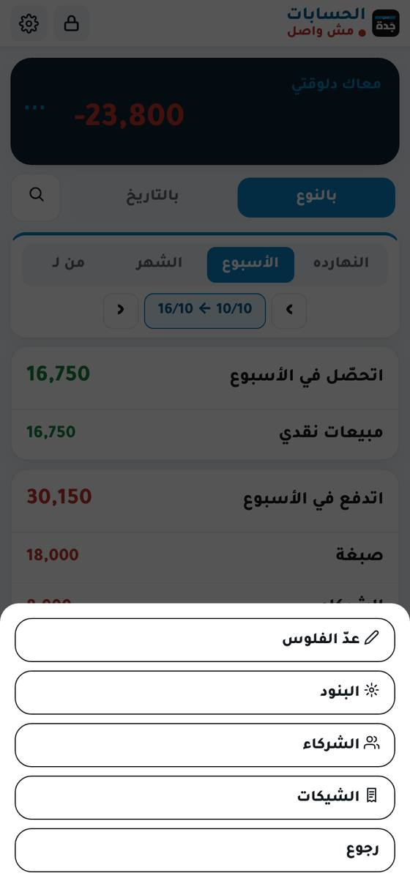
10التسجيل السريع (+)
الزرار الأزرق المدوّر + اللي تحت على الشمال بيسجّل أي حاجة من أي صفحة: فاتورة أو دفعة أو مصروف، وتختار الحساب جوه.
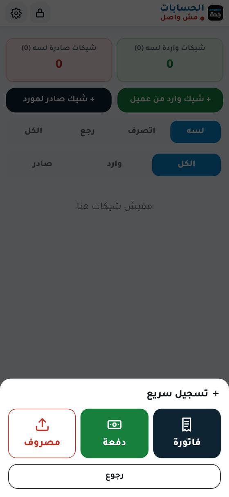
11الشركاء
من الخزنة ← ⋯ ← الشركاء.
زرار "مسحوبات شريك" بيسجل الفلوس اللي أي شريك خدها، باسمه.
فوق بيبان "مين خد كام": مقارنة بين الشركاء والفرق بينهم.
من "إعدادات الشركاء" تكتب أسامي الشركاء والمرتب الأسبوعي لو فيه.
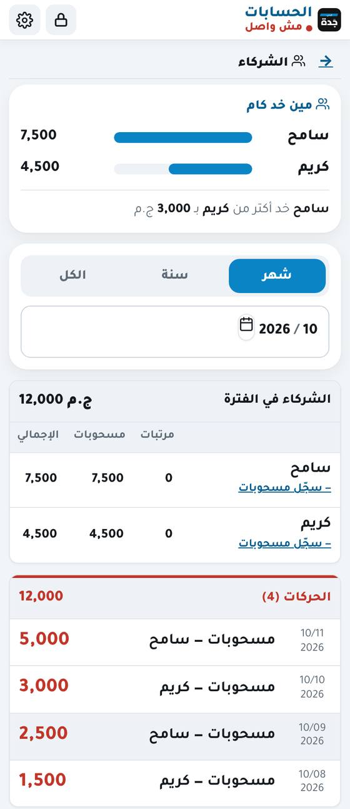
12الشيكات
من الخزنة ← ⋯ ← الشيكات (وعلى اللاب من القايمة اللي على الجنب).
أي دفعة متسجلة "شيك" بتظهر هنا تحت "لسه"، أو سجّل شيك جديد من "+ شيك وارد من عميل" أو "+ شيك صادر لمورد".
لما الشيك يتصرف دوس "✔ اتصرف" اللي جنبه، ساعتها بس يدخل الخزنة. ولو رجع دوس "✖ رجع"، والمبلغ يرجع على العميل.
الشيكات اللي ميعادها قرّب أو فات بيطلعلها تنبيه في الرئيسية.
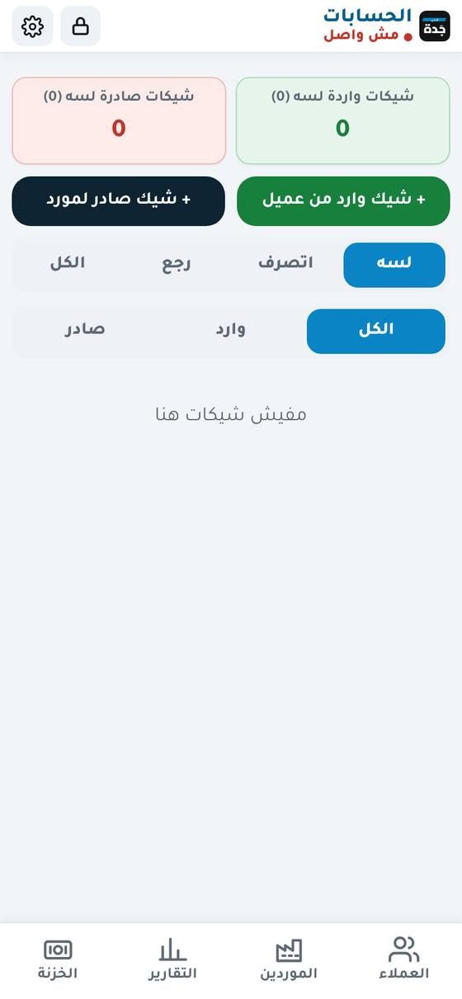
13عروض الأسعار
من حساب العميل ← "عرض سعر"، أو من صفحة عروض الأسعار.
العرض مبيأثرش على أي رصيد، وبيطلع PDF مكتوب عليه "عرض سعر".
لما العميل يوافق دوس "اتنفذ": البرنامج بيعمل فاتورة بنفس الأصناف على طول.
دوس على أي كارت يفتحلك التقرير الكامل، وتقدر تطلعه PDF.
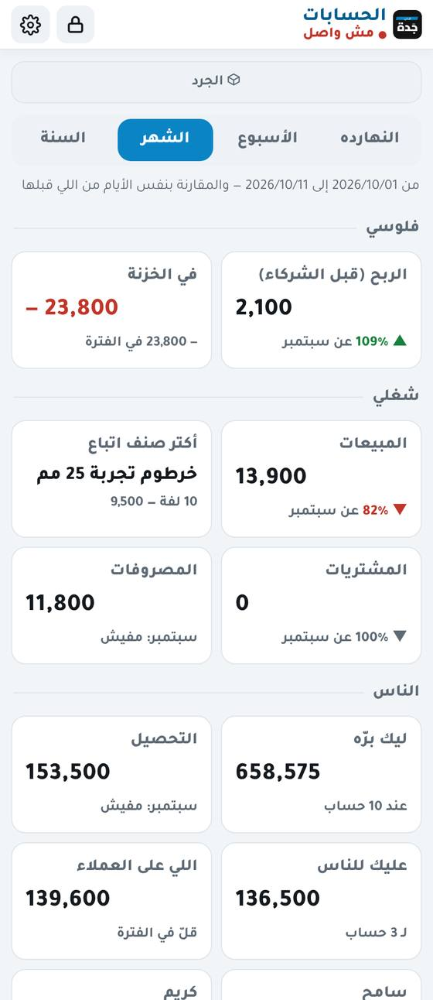
18الإعدادات والبصمة
من الترس ⚙ فوق. كل كارت بيتفتح لما تدوس عليه:
المظهر: فاتح أو ليلي، وحجم الخط.
كلمة السر: تغييرها.
الفتح بالبصمة: دوس "شغّل الفتح بالبصمة"، واكتب كلمة السر مرة، وحط صباعك أو وشك. بعد كده البرنامج هيطلب البصمة لوحده أول ما يفتح. بيشتغل على أندرويد وآيفون (لو الموبايل مش بيدعمها، الكارت مش هيظهر). وتقدر توقفها من نفس المكان.
قفل الشهر: بعد ما تراجع شهر وتبعت الكشوف اقفله، فمحدش يعدّل فيه بالغلط.
بيانات الشركة في الـ PDF: العنوان والتليفون والسجل التجاري والبطاقة الضريبية.
فحص البيانات: بيراجع إن كل الأرصدة مظبوطة.
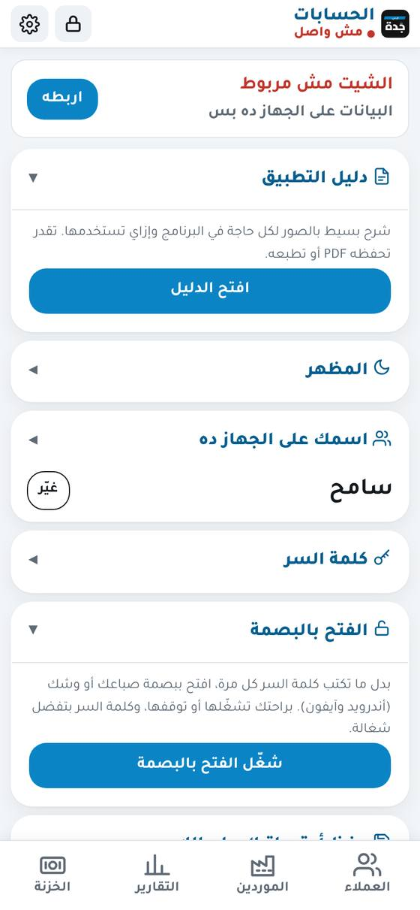
19الأمان والنسخ الاحتياطية
البيانات متشفرة على الجهاز، ومحدش يقدر يفتحها من غير كلمة السر.
البرنامج بيقفل لوحده بعد 10 دقايق من غير استخدام.
Google Sheet: كل حاجة بتتحفظ عليه أول بأول. العلامة اللي فوق تحت اسم البرنامج بتقولك لو متزامن ولا لأ.
على اللاب: من الإعدادات اختار فولدر (أحسن حاجة جوه Google Drive)، والبرنامج يحفظ فيه نسخة كل يوم لوحده. لو بقالك 3 أيام من غير نسخة هيطلعلك تنبيه أحمر.
نسخة يومية على Drive: من الإعدادات، وبتتركّب مرة واحدة بس.
⚠️ لو نسيت كلمة السر: مفيش طريقة تفتح البيانات اللي على الجهاز. دوس "نسيت كلمة السر؟"، والبرنامج يمسح الجهاز ده وترجع تنزّل كل حاجة من الشيت. علشان كده لازم الشيت يبقى مربوط من أول يوم.
20على اللاب
القايمة على الجنب فيها كل الصفحات، والحساب بيفتح جنب قايمة العملا.
اختصارات: وانت فاتح حساب F2 فاتورة بيع وF3 استلام دفعة، ومن أي مكان F4 تسجيل سريع.
"بحث في كل الحركات": دوّر بمبلغ أو صنف أو ملاحظة في كل الحسابات مرة واحدة.
21أسئلة بتتكرر
سجلت حاجة غلط؟ دوس عليها وعدّلها أو ألغيها، والقديم بيتحفظ.
الجهاز التاني مش شايف اللي سجلته؟ اتأكد إن النت شغال وإن العلامة اللي فوق مكتوب فيها متزامن، أو اسحب الصفحة لتحت علشان تتحدث.
غيرت الموبايل؟ افتح البرنامج على الموبايل الجديد، واربطه برابط الربط من الجهاز القديم أو اللاب، وكل حاجة هتنزل.
البرنامج بيشتغل من غير نت؟ أيوه. سجّل عادي، وأول ما النت يرجع كل حاجة بتتبعت للشيت لوحدها.
الرصيد مش مظبوط؟ من الإعدادات ← فحص البيانات، وبعدين راجع كشف حساب العميل حركة حركة.